Art + Architectural Portfolio
Architecture
A selection of degree and diploma work from Damascus University and BME Budapest — spanning art therapy centers, sports complexes, structural studies, and disaster-relief housing. Modeled in Revit, Rhino, and AutoCAD; rendered in Twinmotion, V-Ray, and 3ds Max.
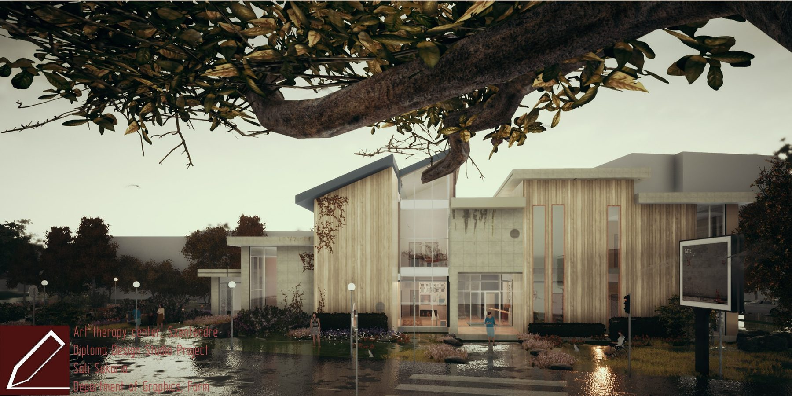
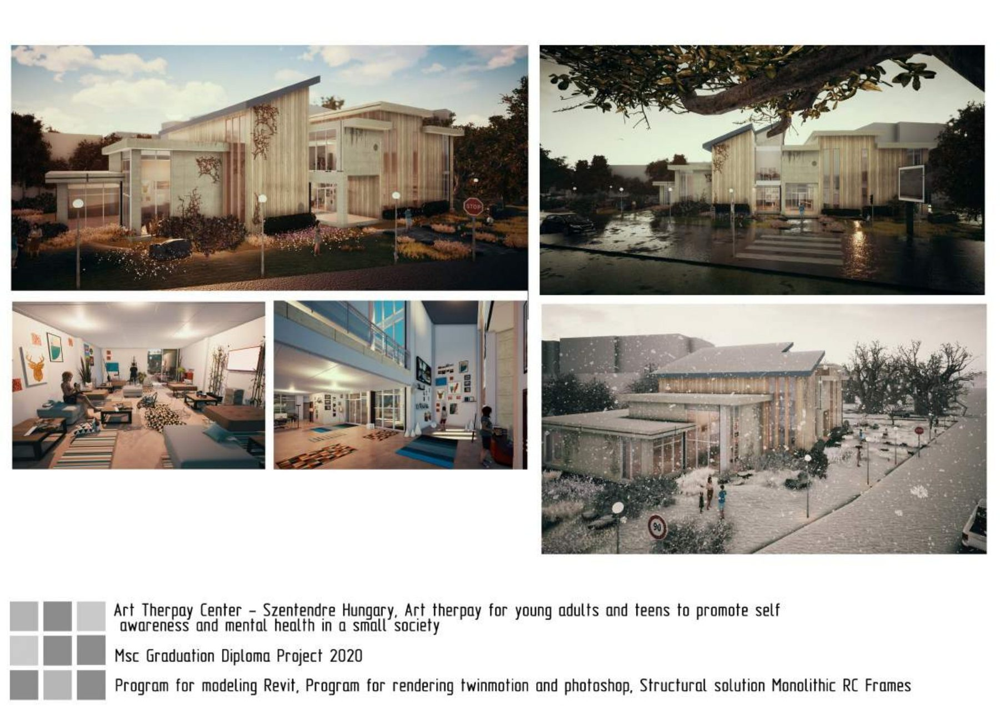
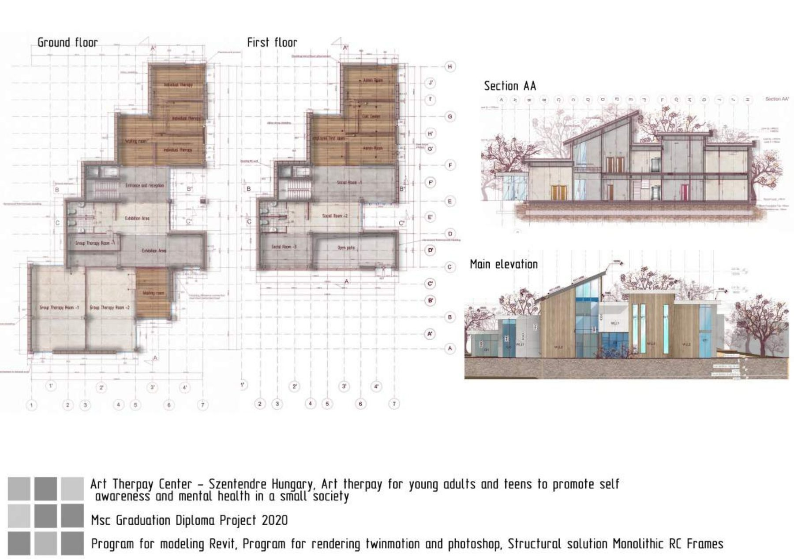
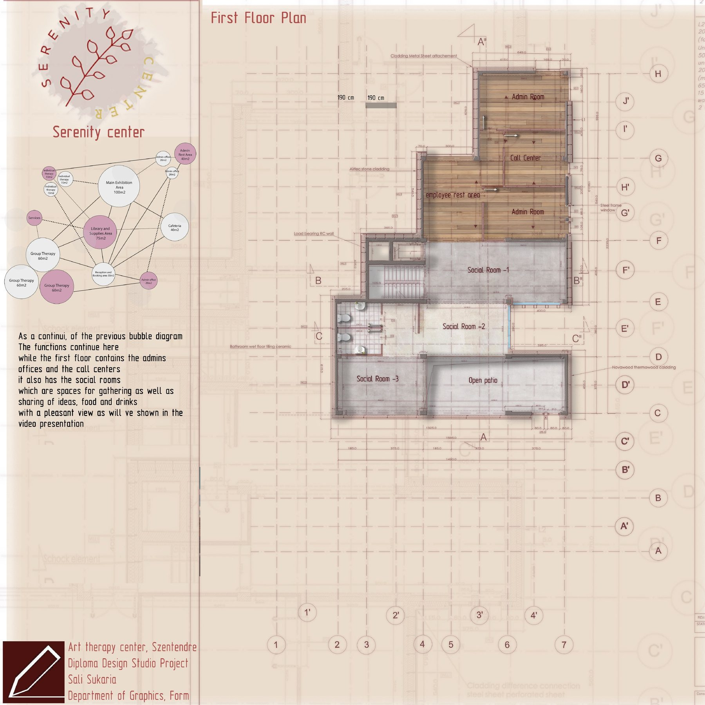
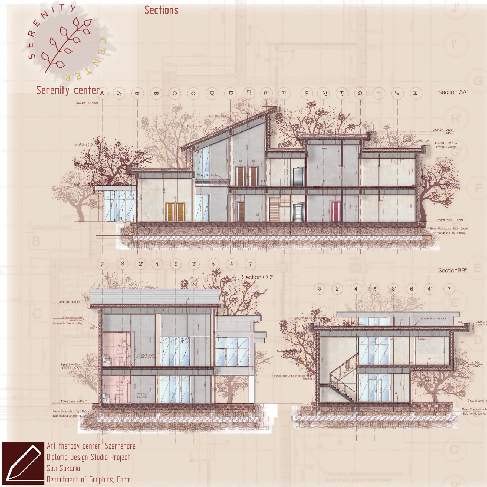
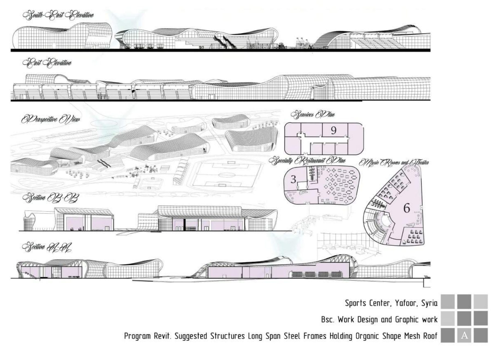
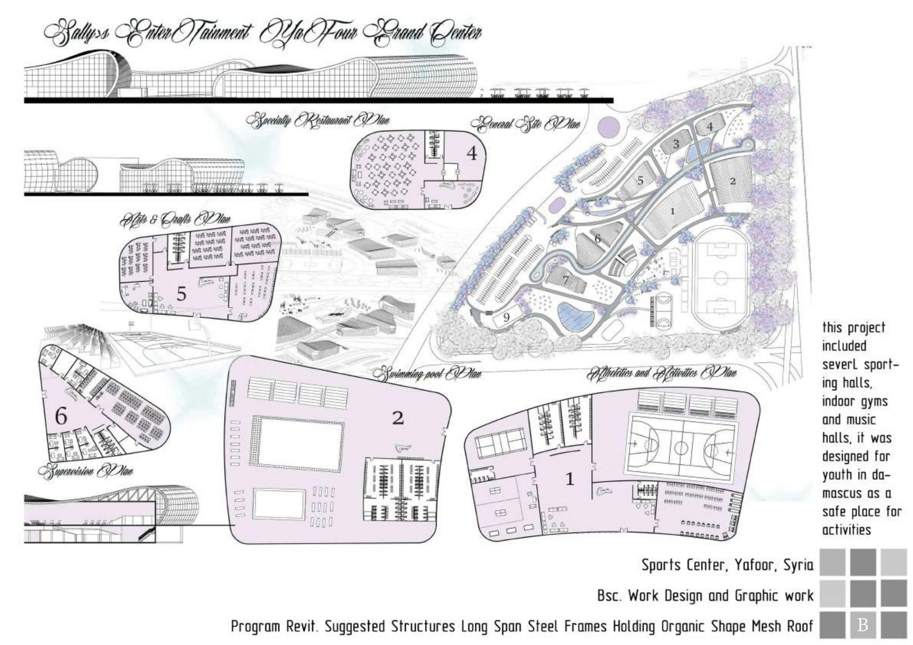
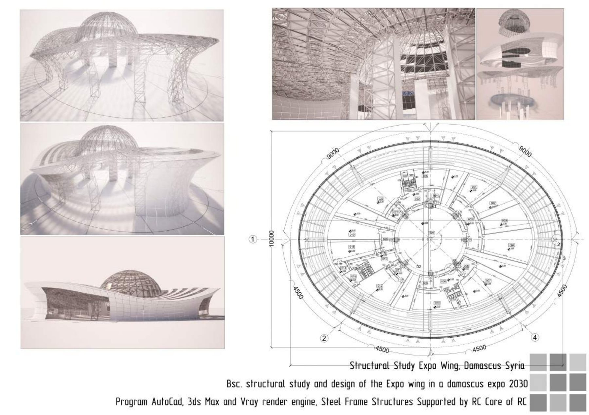
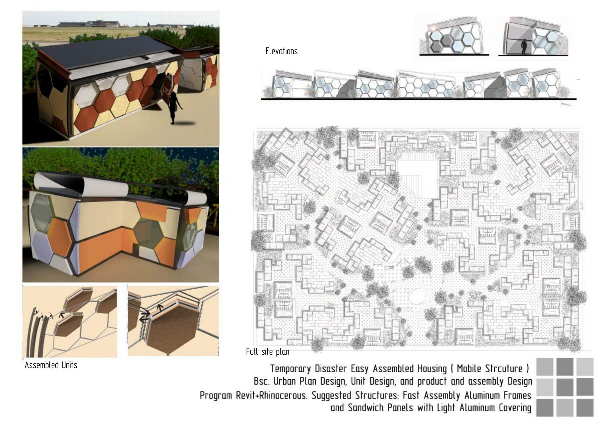
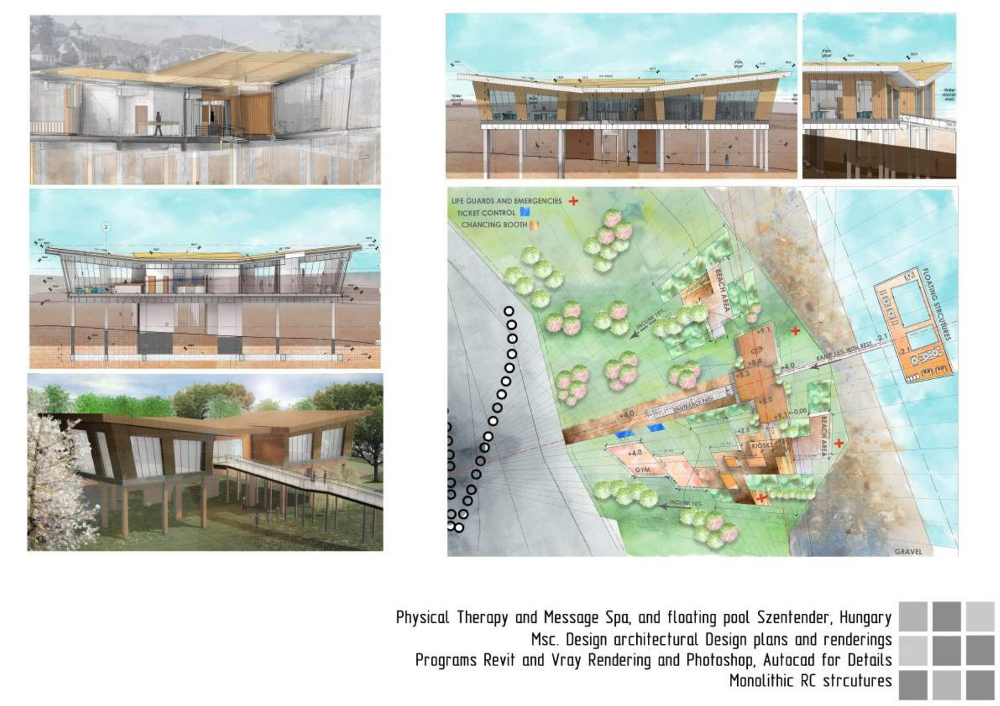
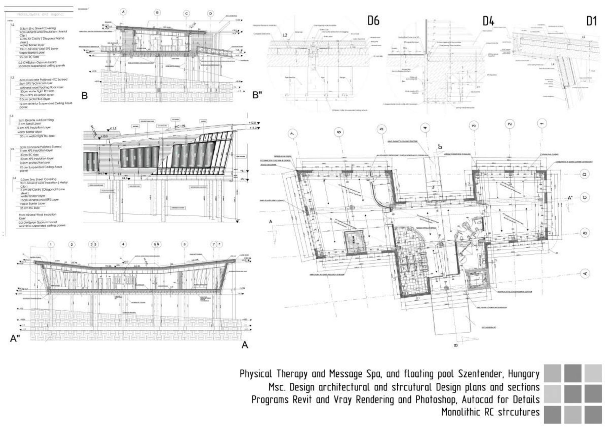
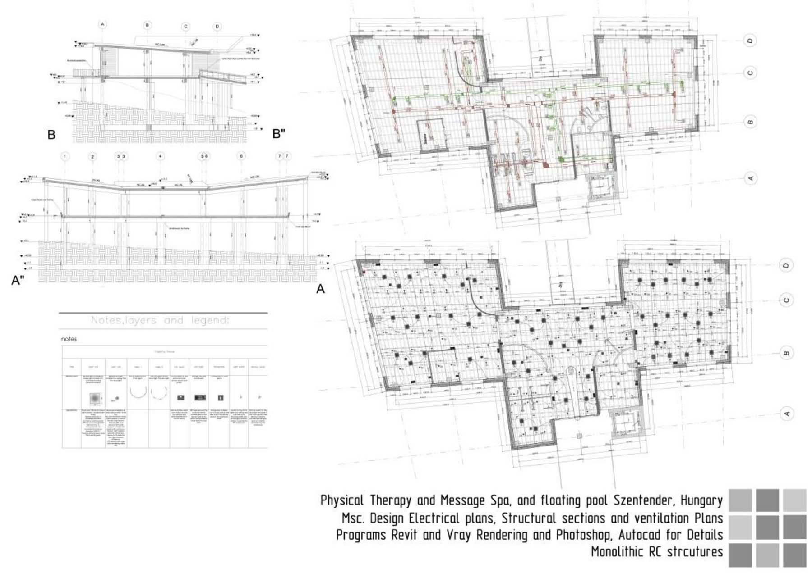
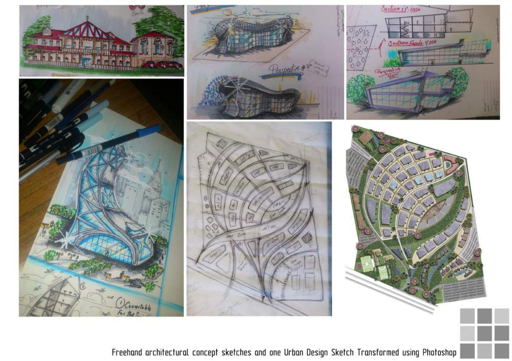